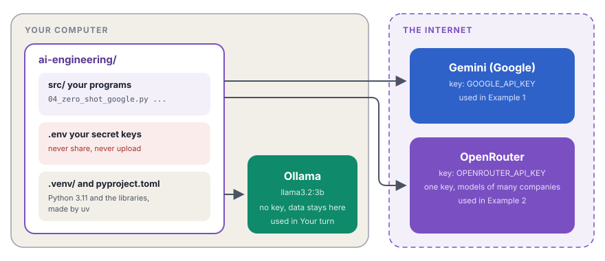

This course teaches AI engineering with real code. This chapter shows how the course works. Then you set up the same project on your own computer.
What you will learn
- How the course works and how each chapter is organized
- How to make a Python project with
uv - How to get API keys for Gemini and OpenRouter and keep them safe
- How to run a model on your own computer with Ollama
- How to check that everything works, with one small program
You need basic Python: variables, functions, lists, loops and import. You do not need to know anything about AI.
1Code first
Every idea in this course is a program that works. You do not only read about a prompt pattern. You build it, run it and see the result. Each chapter builds its program step by step, and explains every statement in the order that you type it.
2Two examples in every chapter
Each chapter builds the same idea two times, on two different problems:
- Example 1 uses a Gemini model from Google.
- Example 2 uses an open model through OpenRouter.
The two examples look at the idea from two sides. For instance, in the chapter on zero-shot prompts, one example sorts food reviews by feeling and the other example sorts security events by threat. When the same pattern works on two different problems, you understand the pattern, not only one example.
Think of a cooking class. In each lesson, the teacher cooks one recipe two times, with different ingredients. You see what stays the same and what changes. At the end of the lesson, you cook a new dish yourself.
3How each chapter is organized
Every chapter has the same parts, in the same order. When you know the order, you always know where to look.
- In one lineThe idea in one sentence
- What you will learnThe goals of the chapter
- The ideaWhat and why, with a real-life analogy
- How it flowsA diagram of the flow of data
- What we buildAim, problem, input and expected output of both examples
- Example 1A guided build, step by step, then the run and the output
- Inside one callWhat happens when the program talks to the model
- Example 2The same guided build, on a different problem
- Side by sideThe two examples compared
- When it worksThe limits of the idea
- Security lensWhat can go wrong and how to prevent it
- Check yourselfThree questions, with hidden answers
- Your turnA new problem for you, on a local model
- Key terms at a glanceEach new word, in one line
Each example has a View on GitHub button for the original code. The full code and the full output are in boxes that open with a click, and each code block has a Copy button.
4The path through the course
The course goes from your first call to a model up to AI systems in production:
- Getting startedTalk to a model, build your first chain, see why answers change
- Talk to the model wellRoles, zero-shot and few-shot prompts, structured output
- Make the model thinkChain of thought and other reasoning patterns
- Build chainsJoin steps, run them in parallel and handle errors
- Manage the contextDecide what the model sees
- Answer from your documentsRetrieval-augmented generation (RAG)
- Agents and toolsLet the model use tools and decide the next step
- GuardrailsKeep the model safe and inside its rules
- MCPConnect tools in a standard way
- Measure qualityTest your AI app with data
- LangGraphBuild agents as graphs
- Many agentsTeams of agents that work together
- ProductionObservability, reliability and cost
- Learn MoreExtra topics at the end
Read the chapters in order, because each chapter uses the ideas of the chapters before it. When you finish a chapter, click Mark this chapter as finished. The course page then shows your progress.
Here is what you will have when you finish:

Step 1Install uv
uv is a fast tool that manages Python projects. It installs the correct Python version, makes a private environment for your project and installs the libraries.
Linux and macOS:
curl -LsSf https://astral.sh/uv/install.sh | shWindows (PowerShell):
powershell -ExecutionPolicy ByPass -c "irm https://astral.sh/uv/install.ps1 | iex"Close the terminal and open it again. Then check that uv works:
uv --versionStep 2Create the project
uv init ai-engineering --python 3.11
cd ai-engineeringuv init ai-engineeringmakes a new folderai-engineeringwith the start files of a project.--python 3.11sets Python 3.11 for this project. If Python 3.11 is not on your computer, uv downloads it for you.cd ai-engineeringmoves you into the new folder.
uv made these files:
| File | Its job |
|---|---|
pyproject.toml | The settings of the project: its name, the Python version and the libraries |
.python-version | The Python version of this project: 3.11 |
README.md | A short text about the project |
.gitignore | The files that Git must not save |
main.py | A small start program. You do not need it, so delete it. |
Now make the folder for your programs:
mkdir srcStep 3Add the libraries
uv add langchain-core langchain-google-genai langchain-openai langchain-openrouter langgraph python-dotenv langchain-ollamauv add installs the libraries and writes them in pyproject.toml. It also makes uv.lock, with the exact version of each library, and .venv/, the private environment of the project.
| Library | Its job in this course |
|---|---|
langchain-core | The base parts: prompts, parsers and chains |
langchain-google-genai | Talks to the Gemini models of Google |
langchain-openrouter | Talks to models from many companies through OpenRouter |
langchain-openai | Talks to services that use the OpenAI format |
langgraph | Builds agents as graphs, in later chapters |
python-dotenv | Reads your secret keys from the .env file |
langchain-ollama | Talks to Ollama on your own computer, for "Your turn" |
Step 4Get your API keys
An API key is a secret password that lets your program use a model service. You need two keys:
- Gemini: sign in at Google AI Studio and click Create API key.
- OpenRouter: make an account at openrouter.ai and create a key on the Keys page.
Both services have free options to start with. Their limits change, so check their pages.
Step 5Store the keys safely
Create a file with the name .env.example. It shows which keys the project needs, with no values:
# OPEN ROUTER
OPENROUTER_API_KEY=
# GOOGLE GEMINI
GOOGLE_API_KEY=Copy it to .env:
cp .env.example .envOpen .env and put your keys after the = signs. Do not use quotes and do not add spaces. Then open .gitignore and make sure that it contains this line. If it does not, add it:
.env.env holds your secret keys. The line in .gitignore tells Git to ignore this file. Thus, your keys never go to GitHub. .env.example has no secrets, so it can go to GitHub.
Step 6Install Ollama for local models
Ollama runs language models on your own computer. You need no API key, and no internet after the download. You use it in each "Your turn" section.
Linux:
curl -fsSL https://ollama.com/install.sh | shmacOS and Windows: download the installer from ollama.com/download and run it.
Then download a small model and test it:
ollama pull llama3.2:3b
ollama run llama3.2:3b "Say hello in one word."ollama pulldownloads the model. It is about 2 GB.ollama runsends one message to the model and prints the answer.
If your computer has little memory, use a smaller model, for example llama3.2:1b.
Step 7Check your folder
Your project must look like this:
ai-engineering/ ├── .venv/ the private environment, made by uv ├── src/ your programs go here ├── .env your secret keys, never share this file ├── .env.example the list of keys, with no values ├── .gitignore ├── .python-version ├── pyproject.toml ├── README.md └── uv.lock
Step 8Test everything with one program
Create the file src/00_check_setup.py and add this code:
"""
Title: Check the setup
uv run python src/00_check_setup.py
"""
from dotenv import load_dotenv
from langchain_core.output_parsers import StrOutputParser
from langchain_google_genai import ChatGoogleGenerativeAI
from langchain_openrouter import ChatOpenRouter
from langchain_ollama import ChatOllama
def check(name, llm):
chain = llm | StrOutputParser()
try:
answer = chain.invoke("Reply with only the word OK.")
print(f"{name:<12} works. Answer: {answer.strip()}")
except Exception as error:
print(f"{name:<12} does not work. Error: {error}")
def main():
load_dotenv()
check("Gemini", ChatGoogleGenerativeAI(model="gemini-3.1-flash-lite", temperature=0))
check("OpenRouter", ChatOpenRouter(model="qwen/qwen-2.5-7b-instruct", temperature=0))
check("Ollama", ChatOllama(model="llama3.2:3b", temperature=0))
if __name__ == "__main__":
main()load_dotenv()reads your keys from.env.check(name, llm)sends one short message to one model and prints the result.llm | StrOutputParser()makes a small chain that returns plain text. Chapter 2 explains chains in detail.tryandexceptcatch an error. Thus, one broken service does not stop the check of the other services.{name:<12}writes the name in a column of 12 characters, so the results line up.main()checks the three services, one after the other.
Run it:
uv run python src/00_check_setup.pyGemini works. Answer: OK
OpenRouter works. Answer: OK
Ollama works. Answer: OKYour answers can be a little different, for example OK. with a period. Language models do not always answer the same way. That is normal.
If one line says "does not work," read the error:
| The error contains | What to do |
|---|---|
API key or 401 | Check the key in .env: no spaces, no quotes and the correct name |
Connection refused (Ollama) | Start Ollama with ollama serve, or open the Ollama app |
model not found (Ollama) | Run ollama pull llama3.2:3b |
No module named | Run the uv add command of Step 3 again |
- Your API keys are like passwords. A person with your key can use your account and your money. Keep keys only in
.env. Never paste them into code, chats or screenshots. - If a key leaks, delete it at once on the website of the service, and create a new key.
- Cloud models see your data. All text that you send to Gemini or OpenRouter goes to their servers. Do not send passwords or personal data in your tests. With Ollama, your data stays on your computer.
Check yourself
Why must .env be in .gitignore, but .env.example must not?
.env holds your real keys, so it must never go to GitHub. .env.example holds only the names of the keys, with no values. It tells other people which keys the project needs.
What does uv add change in your project?
It installs the libraries in .venv/, writes them in pyproject.toml and records the exact versions in uv.lock.
Which of the three model services works with no internet connection?
Ollama. It runs the model on your own computer. Gemini and OpenRouter run on servers on the internet.
Key terms at a glance
| Term | Meaning |
|---|---|
| uv | A tool that manages Python, the environment and the libraries of a project. |
| Environment | A private folder (.venv) with the Python and the libraries of one project. |
| pyproject.toml | The settings file of the project. |
| uv.lock | The exact versions of all libraries. |
| API key | A secret password that lets a program use a model service. |
| .env | The file that holds your secret keys. |
| OpenRouter | One service that gives access to models from many companies. |
| Ollama | A program that runs models on your own computer. |